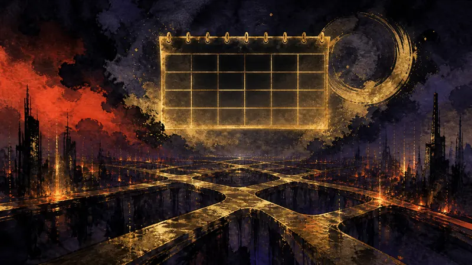

削除 AnthropicのIPO推進時期、10月中旬に延期（訳）
本則為 AI 公司上市時程的財經新聞，來源全文未涉及遊戲、遊戲平台或遊戲產業，不符本站選題範圍，發布後複核判定撤下。
先鴉｜夜明けの便り
プレイヤーの主体性：政策がそれをどう制限し、産業がそれをどう形づくり、物語設計がそれをどう実現するか。

本項目は公開後の見直しにより、本サイトの選定範囲外である、または内容に誤りがあると判断されたため削除されました。詳細は訂正記録ページをご覧ください。
本則為 AI 公司上市時程的財經新聞，來源全文未涉及遊戲、遊戲平台或遊戲產業，不符本站選題範圍，發布後複核判定撤下。